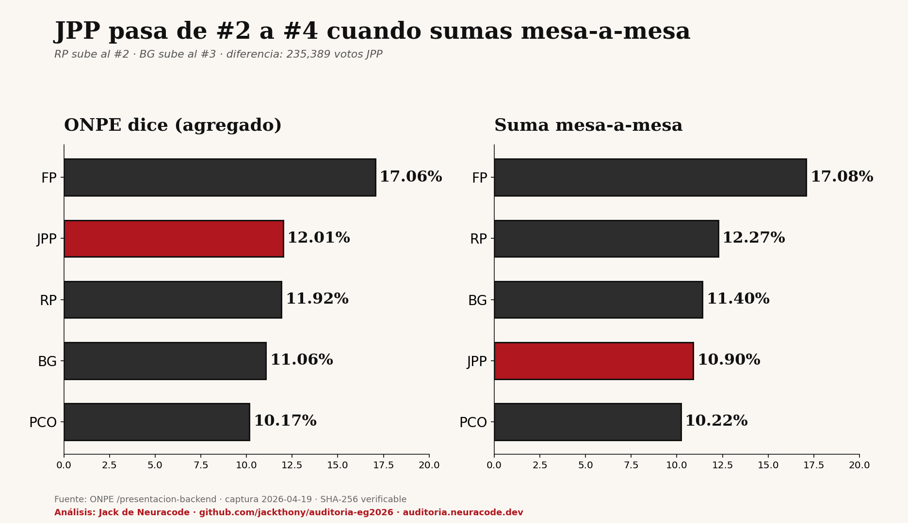

ONPE publica dos cifras: el total nacional agregado y el detalle mesa por mesa. Cuando sumas manualmente las 88,063 mesas de la API, el ranking cambia. JPP pierde 2 puestos. RP gana uno. BG gana uno.

| Agrupación | Oficial | Mesa-a-mesa | Delta |
|---|---|---|---|
| JUNTOS POR EL PERÚ | #2 | #4 | −2 puestos |
| RENOVACIÓN POPULAR | #3 | #2 | +1 puesto |
| PARTIDO DEL BUEN GOBIERNO | #4 | #3 | +1 puesto |
| FUERZA POPULAR | #1 | #1 | sin cambio |
| Agrupación | Oficial votos | Mesa-a-mesa votos | Diferencia |
|---|---|---|---|
| JUNTOS POR EL PERÚ | 1,891,906 | 1,656,517 | −235,389 |
| RENOVACIÓN POPULAR | 1,878,493 | 1,863,643 | −14,850 |
| PARTIDO DEL BUEN GOBIERNO | 1,743,316 | 1,731,694 | −11,622 |
| FUERZA POPULAR | 2,687,621 | 2,595,320 | −92,301 |
Porcentaje JPP oficial: 12.01%. Mesa-a-mesa: 10.90%. Diferencia: 1.10 puntos.
Suma todas las mesas tú mismo. El dataset público está en HuggingFace: